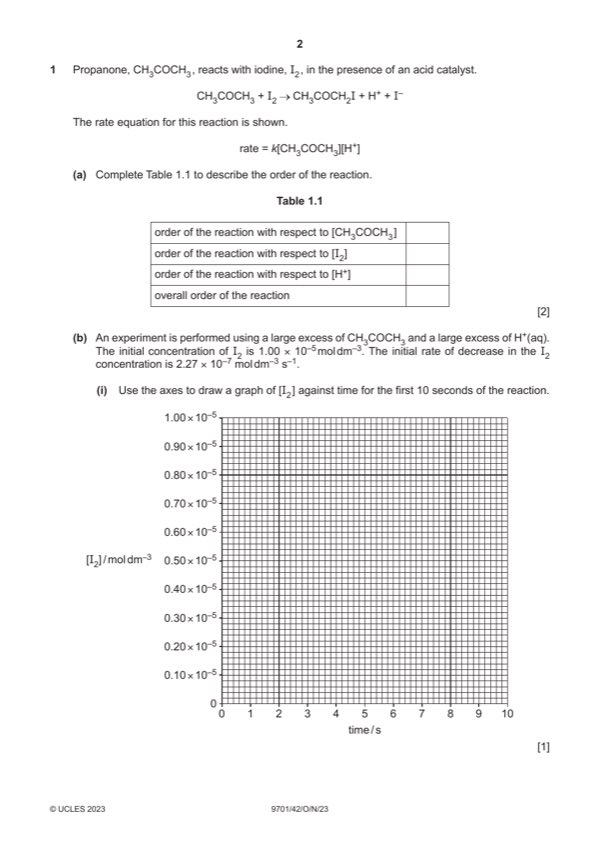

Question 1

Original paper page 2
Part 1(a) — solution
Answer: 1 2
1 2
Mark points
- Correct result: 1 2
Part 1(b)(i) — solution
The line should start at 1 10–5 and decrease to 0.773 10–5 / 7.73 10–6 and be straight for 10 s [1] 1
Mark points
- Include the ideas shown in the solution above.
Part 1(b)(ii) — solution
its not possible AND the concentrations in the rate law are not known [1] 1
Mark points
- Include the ideas shown in the solution above.
Part 1(c) — solution
9.24 10–7 [1] 1
Mark points
- Include the ideas shown in the solution above.
Part 1(d)(i) — solution
630 [1] 1
Mark points
- Include the ideas shown in the solution above.
Part 1(d)(ii) — solution
Three halvings taking equal times, these times to agree with their answer to di.[1] 1
Mark points
- Include the ideas shown in the solution above.
Part 1(e)(i) — solution
- CH3COH=CH2 + I2 → CH3C+(OH)CH2I + I– [1] 1
Mark points
- CH3COH=CH2 + I2 → CH3C+(OH)CH2I + I– [1] 1
Part 1(e)(ii) — solution
step 1 AND has (both) substances in rate law.[1] 1
Mark points
- Include the ideas shown in the solution above.
Part 1(e)(iii) — solution
- CH3C+(OH)CH3 and CH3C(OH)=CH2 OR
Mark points
- CH3C+(OH)CH3 and CH3C(OH)=CH2 OR